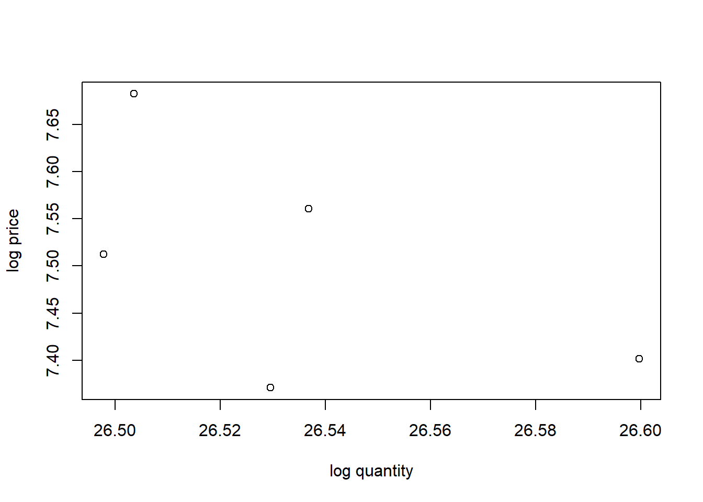
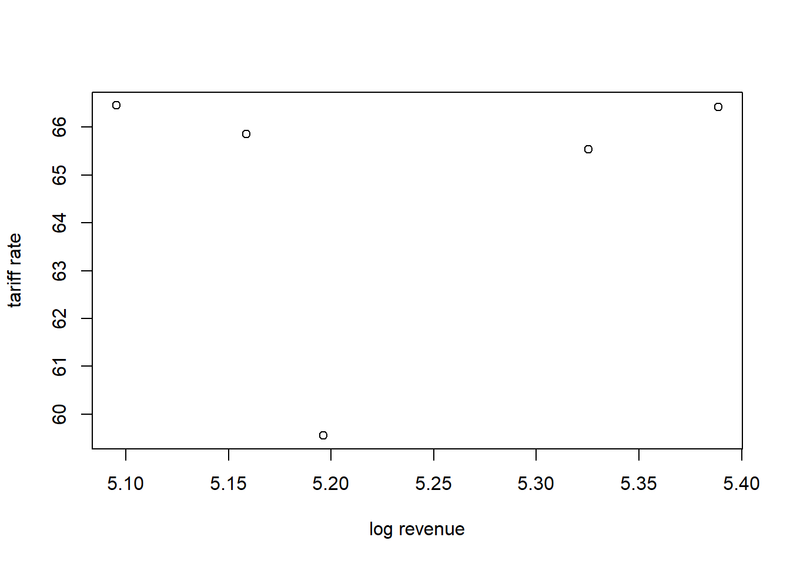
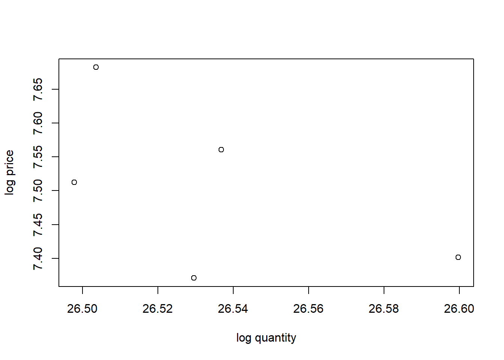
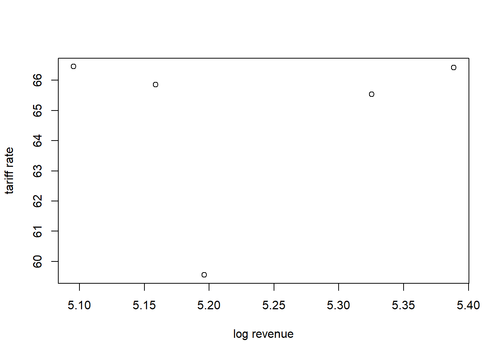

aowkaowkaowk


Let a standard elasticity parameters
Q_i=AP_i^{-\varepsilon}
which can be approximately log-linearized
q_i=a-\varepsilon p_i
where a lowercase is the log version of its uppercase counterparts. We can, thus, econometrically estimated the above equation with a regression. Additionally, we follow the theory in having an income elasticity with GDP per capita as a proxy. We then estimate:
q_{it}=a-\varepsilon p_{it} + \gamma y_{it} + \epsilon_{it}
We assume an iid \epsilon_{it} for now and uses own-price elasticity since we lack information on the price of electric cigs. The parameter \varepsilon is the own-price elasticity of demand, which we expect to be negative, while \gamma is the income elasticity of demand which is assumed to be positive.
We use data that are made available by DGCE for us. Data contains production, revenue, base price (HJE) for tax purposes and retail price (HTE) for consumers for various types of traditional and electric cigarettes. Unfortunately, the availability of those data differs quite tremendously. Some are collected monthly, some others are quarterly and annually. Common denominator suggests us to conduct the analysis annually.
Since we lack degree of freedom amid lack of data, it does make sense to group kinds of cigarettes into two: traditional and electric. We aggregate variables using weighted average using production data of each kind of cigarettes as the weight.
| Traditional | SKM | SKT | SPM |
|---|---|---|---|---|
(Intercept) | 25.750** | 6.592+ | -9.257 | 4.212 |
(1.571) | (2.048) | (6.921) | (3.185) | |
own-price | -0.479 | -0.782+ | 0.873 | -1.216* |
(0.212) | (0.202) | (1.497) | (0.274) | |
y | 0.525 | 0.578 | 0.879 | 0.900 |
(0.311) | (0.369) | (1.403) | (0.546) | |
Num.Obs. | 5 | 5 | 5 | 5 |
R2 | 0.722 | 0.917 | 0.663 | 0.935 |
R2 Adj. | 0.444 | 0.835 | 0.326 | 0.870 |
AIC | -17.4 | -15.3 | -2.1 | -10.9 |
BIC | -18.9 | -16.9 | -3.6 | -12.5 |
Log.Lik. | 12.692 | 11.657 | 5.039 | 9.473 |
F | 2.597 | 11.089 | 1.967 | 14.360 |
RMSE | 0.02 | 0.02 | 0.09 | 0.04 |
+ p < 0.1, * p < 0.05, ** p < 0.01, *** p < 0.001 | ||||
The elasticity of the traditional cigarettes is -0.4791002 which is the decrease in sales if prices go up by 1%. Meanwhile, 0.5248967is the income-effect, that is, how much more sales go up if GDP per capita rises by 1%.
We can then propose an elasticity equation as such:
Q_{trad}=\frac{Y^{0.52}}{P_{trad}^{0.48}}\cdot e^{25.75}
This parameter is actually make sense. The inelasticity of cigarette demands is quite well-known.
We also examine if it matters by different kinds:
In the terms of excise, DGCE is interested in knowing how much their additional excise matters for the change in prices, which in turn matter in the change in quantities. We estimate how much prices changes when excise changes with the following specification:
\ln P_t = \alpha+\beta \ln T_t + \varepsilon_{t}
The result of that regression is as follows:
| Traditional | SKM | SKT | SPM |
|---|---|---|---|---|
(Intercept) | 1.940* | 2.399** | 4.299 | 2.651* |
(0.493) | (0.257) | (12.330) | (0.483) | |
own-excise | 0.879** | 0.798*** | 0.532 | 0.759** |
(0.078) | (0.039) | (2.248) | (0.074) | |
Num.Obs. | 5 | 5 | 5 | 5 |
R2 | 0.977 | 0.993 | 0.018 | 0.972 |
R2 Adj. | 0.969 | 0.990 | -0.309 | 0.963 |
AIC | -20.5 | -24.1 | -6.2 | -16.5 |
BIC | -21.7 | -25.2 | -7.4 | -17.7 |
Log.Lik. | 13.267 | 15.031 | 6.118 | 11.246 |
F | 127.688 | 407.922 | 0.056 | 104.179 |
RMSE | 0.02 | 0.01 | 0.07 | 0.03 |
+ p < 0.1, * p < 0.05, ** p < 0.01, *** p < 0.001 | ||||
Call:
lm(formula = ptrad ~ ctrad, data = dat)
Residuals:
1 2 3 4 5
-0.017269 0.019518 0.007412 -0.023142 0.013481
Coefficients:
Estimate Std. Error t value Pr(>|t|)
(Intercept) 1.93985 0.49265 3.938 0.02918 *
ctrad 0.87923 0.07781 11.300 0.00149 **
---
Signif. codes: 0 '***' 0.001 '**' 0.01 '*' 0.05 '.' 0.1 ' ' 1
Residual standard error: 0.022 on 3 degrees of freedom
Multiple R-squared: 0.977, Adjusted R-squared: 0.9694
F-statistic: 127.7 on 1 and 3 DF, p-value: 0.001486This estimation result tells us a very strong impact of taxation on prices. That is, for each 1% increase in excise, it passes 0.8792325 % to the consumer via increased price. This estimation is arguable higher than Prasetyo and Adrison (2020) which conducted a firm-level estimation.
We then examine whether it make sense to estimate between different types of traditional cigarettes:
Call:
lm(formula = pskm ~ cskm, data = trad)
Residuals:
1 2 3 4 5
-0.017864 0.015538 0.008314 -0.008875 0.002886
Coefficients:
Estimate Std. Error t value Pr(>|t|)
(Intercept) 2.39938 0.25690 9.34 0.002599 **
cskm 0.79760 0.03949 20.20 0.000265 ***
---
Signif. codes: 0 '***' 0.001 '**' 0.01 '*' 0.05 '.' 0.1 ' ' 1
Residual standard error: 0.01546 on 3 degrees of freedom
Multiple R-squared: 0.9927, Adjusted R-squared: 0.9903
F-statistic: 407.9 on 1 and 3 DF, p-value: 0.0002653
Call:
lm(formula = pskt ~ cskt, data = trad)
Residuals:
1 2 3 4 5
-0.07304 -0.01295 -0.01731 -0.03258 0.13589
Coefficients:
Estimate Std. Error t value Pr(>|t|)
(Intercept) 4.2994 12.3304 0.349 0.750
cskt 0.5324 2.2482 0.237 0.828
Residual standard error: 0.09188 on 3 degrees of freedom
Multiple R-squared: 0.01835, Adjusted R-squared: -0.3089
F-statistic: 0.05607 on 1 and 3 DF, p-value: 0.8281
Call:
lm(formula = pspm ~ cspm, data = trad)
Residuals:
1 2 3 4 5
-0.010214 0.007932 0.025630 -0.044546 0.021199
Coefficients:
Estimate Std. Error t value Pr(>|t|)
(Intercept) 2.6513 0.4830 5.49 0.0119 *
cspm 0.7594 0.0744 10.21 0.0020 **
---
Signif. codes: 0 '***' 0.001 '**' 0.01 '*' 0.05 '.' 0.1 ' ' 1
Residual standard error: 0.03295 on 3 degrees of freedom
Multiple R-squared: 0.972, Adjusted R-squared: 0.9627
F-statistic: 104.2 on 1 and 3 DF, p-value: 0.002004Results from each
Call:
lm(formula = revtrad ~ ctrad + y, data = dat)
Residuals:
1 2 3 4 5
-0.0228236 0.0147477 0.0004673 0.0247555 -0.0171469
Coefficients:
Estimate Std. Error t value Pr(>|t|)
(Intercept) -2.5429 1.6020 -1.587 0.2534
ctrad 0.5917 0.1684 3.515 0.0723 .
y 0.4830 0.2778 1.739 0.2242
---
Signif. codes: 0 '***' 0.001 '**' 0.01 '*' 0.05 '.' 0.1 ' ' 1
Residual standard error: 0.02868 on 2 degrees of freedom
Multiple R-squared: 0.9719, Adjusted R-squared: 0.9438
F-statistic: 34.59 on 2 and 2 DF, p-value: 0.0281
Call:
lm(formula = rskm ~ cskm + y, data = trad)
Residuals:
1 2 3 4 5
-0.020994 0.012364 -0.003082 0.031767 -0.020055
Coefficients:
Estimate Std. Error t value Pr(>|t|)
(Intercept) -2.0717 1.9461 -1.065 0.399
cskm 0.3746 0.1351 2.772 0.109
y 0.5646 0.3088 1.828 0.209
Residual standard error: 0.03174 on 2 degrees of freedom
Multiple R-squared: 0.9637, Adjusted R-squared: 0.9275
F-statistic: 26.58 on 2 and 2 DF, p-value: 0.03626
Call:
lm(formula = rskt ~ cskt + y, data = trad)
Residuals:
1 2 3 4 5
-0.037256 -0.006483 0.002474 0.080659 -0.039394
Coefficients:
Estimate Std. Error t value Pr(>|t|)
(Intercept) -45.5216 11.4108 -3.989 0.0575 .
cskt 5.9142 1.7805 3.322 0.0799 .
y 1.9232 0.4248 4.527 0.0455 *
---
Signif. codes: 0 '***' 0.001 '**' 0.01 '*' 0.05 '.' 0.1 ' ' 1
Residual standard error: 0.0689 on 2 degrees of freedom
Multiple R-squared: 0.9242, Adjusted R-squared: 0.8483
F-statistic: 12.19 on 2 and 2 DF, p-value: 0.07584
Call:
lm(formula = rspm ~ cspm + y, data = trad)
Residuals:
1 2 3 4 5
-0.020414 0.015209 0.008042 0.003455 -0.006293
Coefficients:
Estimate Std. Error t value Pr(>|t|)
(Intercept) -6.68233 1.23425 -5.414 0.0325 *
cspm 0.00190 0.07323 0.026 0.9817
y 1.04918 0.18933 5.542 0.0311 *
---
Signif. codes: 0 '***' 0.001 '**' 0.01 '*' 0.05 '.' 0.1 ' ' 1
Residual standard error: 0.01955 on 2 degrees of freedom
Multiple R-squared: 0.9771, Adjusted R-squared: 0.9541
F-statistic: 42.58 on 2 and 2 DF, p-value: 0.02295
Call:
lm(formula = qskm ~ pskm + pspm + pskt, data = trad)
Residuals:
1 2 3 4 5
-0.025048 0.017589 0.014311 0.002962 -0.009814
Coefficients:
Estimate Std. Error t value Pr(>|t|)
(Intercept) 4.0424 3.1306 1.291 0.420
pskm 2.5689 1.5995 1.606 0.355
pspm -3.1810 1.6122 -1.973 0.299
pskt 0.8390 0.5433 1.544 0.366
Residual standard error: 0.03531 on 1 degrees of freedom
Multiple R-squared: 0.9627, Adjusted R-squared: 0.8508
F-statistic: 8.6 on 3 and 1 DF, p-value: 0.2444Unfortunately, analyzing electric cigarettes is heavily constrained by the data. Since 2022 is the only year with a complete observation of production, revenue and prices, we cannot use econometric methods. We can, however, construct a direct derivation of elasticity from a simple algebra.
Assume a demand function as follows:
Q_{el}=AP_{el}^{\nu}
We can derive the elasticity \nu by first doing a log-lineraization
\ln Q_{el} = \nu \ln P_{el}+\ln A
While this structure allows for an estimation of \nu and A as the intercept, parameterizing both are impossible unless we have more than 1 data point at the very least1.
One of a way to estimate \nu is to use A from the traditional cigarettes estimation.
which gives us:
\nu= -\frac{\ln Q_{el}}{\ln P_{el}+\ln A}
The main limitation is data. With the lack of annual data, we are limited to how much degree of freedom we can utilise. That is, we are limited to how much variable we can use in a single regression. Among the limitations are:
traditional cigarettes:
quarterly HTP:HJE data is useful.
production and revenue data is annual. Common denominator principle suggests we can only use annual data.
Data is limited to 2018-2022 for a full year of observation.
electronic cigarettes:
excellent monthly production and revenue data. However, monthly data often prone to seasonality and cyclicality.
HJE and HTP are only available for June 2022 and June 2023.
Names of cigs are different between different years.
consequence is more severe: only 2022 observation can be used.
Going forward, here are our recomendations regarding data for the DGCE:
have a robust datasets which can easily be extracted into familiar form.
Keep collecting monthly data even though some HTP and HJE (or other regulations) do not change.
We propose a structure which can be extremely useful for future usage.
For further analysis, we can recommend the use of other datasets, such as Susenas or other household surveys. Unfortunately, there is no going around the lack of data. Even if we can utilise other data, we will still need HTP:HJE and annual revenue from the DGCE.
Obviously the more data point the better. While 2 data points are enough for parameterisation, it is not ideal.↩︎